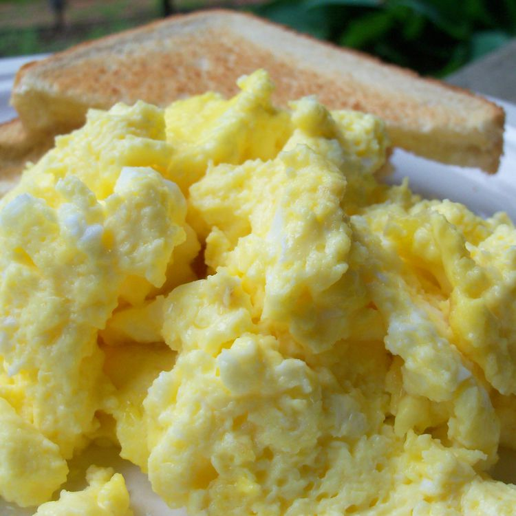

Oven Scrambled Eggs

Description
These baked scrambled eggs are light and fluffy and are a snap to put
together for a big crowd. I usually make two pans for our Christmas brunch,
and I never have many leftovers!
Ingredients
- ½ cup butter or margarine, melted
- 24 eggs
- 2 ¼ teaspoons salt
- 2 ½ cups milk
Steps
- Preheat the oven to 350 degrees F (175 degrees C).
- Pour melted butter into a 9x13-inch glass baking dish
-
Whisk together eggs and salt in a large bowl until well-blended.
Gradually whisk in milk. Pour egg mixture into the buttered dish.
-
Bake uncovered in the preheated oven for 10 minutes. Stir egg mixture
and continue to bake until eggs are set, 10 to 15 minutes more.